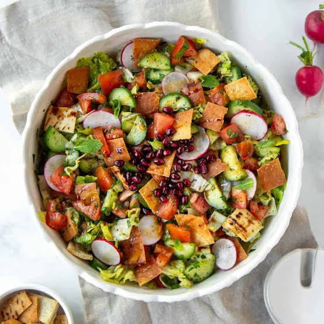

Fattoush Recipe
Home

Description
Fattoush is a bright Levantine bread salad made with crisp vegetables,
fresh herbs, toasted or fried pita bread,
and a tangy sumac and pomegranate molasses dressing
Ingredients
- Pita bread : 1-2 pieces cut into bite-sized squares
- Lettuce : 5-6 cups
- Cucumbers: 2 sliced pieces
- Tomatoes: 2 medium or 12 cherry tomatoes, chopped or halved
- Radishes: 4-5, thinly sliced
- Onions: 1/4, thinly sliced
- Parsley: 1/2 chopped cup
- Pomegranate seeds
- Dressing: 1/4 cup extra virgin oil, 2-3 tbsp fresh lemon juice, 1/2 tsp salt, 1 tbsp pomegranate molasses
Steps
- Crisp the pita: Toss pita pieces with a little olive oil and salt. Bake at 200°C–220°C
for 5–10 minutes, or pan-fry/deep-fry until golden and crisp.
Cool slightly.
- Prep the vegetables: Chop the lettuce, cucumbers, tomatoes,
radishes, onion, and parsley into bite-sized pieces.
- Whisk the dressing: Whisk together olive oil, lemon juice,
pomegranate molasses, and salt until emulsified.
- Assemble and serve: Toss the vegetables and herbs with most of the dressing.
Fold in the crispy pita chips right before serving, then finish with remaining dressing,
and a drizzle of pomegranate molasses.
Bon Appetit!